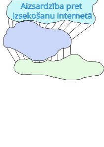

Ierīces unikālais identifikators (UDI) ir unikāls, ar medicīnisku ierīci saistīts ciparu vai burtciparu kods, kas ļauj skaidri un nepārprotami identificēt konkrētas, tirgū laistas ierīces un atvieglo to izsekojamību. UDI sistēma nodrošina globāli saskaņotu medicīnisko ierīču identifikāciju, pamatojoties uz globāliem standartiem, t.i. katras ierīces unikāls marķējums un saite uz UDI datu bāzēm (GS1Latvija)
Virtual Private Network latviski tulkojams kā “virtuālais privātais tīkls”. Tas sniedz iespēju interneta vidē pasargāties drošā un šifrētā “burbulī”. Tas veido privātu savienojumu starp ierīci un serveri.
1. Šifrēšana: Savienojoties ar VPN, interneta trafiks tiek šifrēts. Vienkāršoti – dati, kas ceļo starp ierīci un VPN serveri, ir drošībā no ļaundariem.
2. Anonimitāte: VPN arī lieliski maskē IP adresi. Tādējādi lietotāja atrašanās vieta nenokļūs nepareizajās rokās.
3. Ģeogrāfisko ierobežojumu ignorēšana: Virtuālais privātais tīkls var izveidot piekļuvi saturam, kas nav pieejams lietotāja konkrētajā atrašanās vietā. Savienojoties ar citas lokācijas serveri, uzrādīsies, ka lietotājs veic pārlūkošanu no turienes.
4. Drošs savienojums publiskajā tīklā: Pieslēdzoties publiskiem Wi-Fi tīkliem, lietotāja dati ir pieejami citiem cilvēkiem. Virtuālais privātais tīkls nodrošina papildus aizsardzību.
5. Privātums un drošība: Piekļūstot privātai informācijai, piemēram, bankas datiem, bieži tiek izmantots VPN. ((Notepad), 2023)
Virtuālais privātais tīkls (VPN) ir tehnoloģija, kas nodrošina drošu un šifrētu savienojumu starp lietotāju un interneta resursiem. Šī tehnoloģija ļauj lietotājiem piekļūt tīmekļa vietnēm un tiešsaistes pakalpojumiem, it kā tie atrastos citā fiziskā vietā. VPN izmanto šifrēšanu, lai aizsargātu datus no nesankcionētas piekļuves, padarot to noderīgu, piemēram, kad lietotājs izmanto publiskos Wi-Fi tīklus. Ar VPN jūs varat būt drošs, ka jūsu dati ir aizsargāti no izsekošanas un uzraudzības. Daudzas organizācijas un reklāmdevēji cenšas izsekot jūsu tiešsaistes darbības, lai izmantotu jūsu personīgos datus komerciālos nolūkos. VPN šifrē jūsu datplūsmu, padarot to nesalasāmu un nepieejamu trešajām pusēm. Tas nozīmē, ka jūs varat pārlūkot internetu ar lielāku privātumu un drošību. (Samanta, 2024)
Sīkdatnes (cookie) ir nelielas teksta datnes, kuras tiek nosūtītas uz lietotāja datoru vai mobilo ierīci tīmekļa vietnes apmeklēšanas laikā un kuras tīmekļa vietne saglabā lietotāja datorā vai mobilajā ierīcē, kad lietotājs atver vietni. Sīkdatnēs saglabātā informācija var ietvert tādus personas datus kā: IP adresi, lietotājvārdu, unikālu identifikatoru vai e-pasta adresi. Tāpat sīkdatnes satur informāciju par valodas iestatījumiem, informāciju par ierīces veidu, kuru izmantoju tīmekļa vietnes pārlūkošanai, kā arī lietotāja ID (identifikators), reklāmu ID un citu izsekošanas tehnoloģiju ID. Līdz ar ko – jā, sīkdatnes apstrādā personas datus.
1. tehniskās sīkdatnes, sauktas arī par nepieciešamajām vai funkcionālajām sīkdatnēm (nav jāiegūst lietotāja piekrišana);
2. personalizētās sīkdatnes (jāiegūst lietotāja piekrišana);
3. analītiskās sīkdatnes (jāiegūst lietotāja piekrišana).
Tehniskās sīkdatnes ir klasificējamas kā tādas, bez kuru izmantošanas tīmekļa vietne nevar funkcionēt, savukārt pārējās divas ir izvēles sīkdatnes, kas palīdz pielāgot saturu tīmekļa vietnes lietotājam, kā arī analizēt tā darbības tīmekļa vietnē. Piemēram, bez tehnisko sīkdatņu izmantošanas, tīmekļa vietne var parādīties gan vizuāli, gan tehniski nepilnīga. Savukārt, personalizēto sīkdatņu izmantošana ļauj tīmekļa vietnei atcerēties manis izmantoto valodu vai vizuālo izkārtojumu, bet analītiskās sīkdatnes seko līdzi lietotāja darbībām, tādējādi iegūstot statistiku par tā paradumiem, uzturēšanās ilgumu konkrētās tīmekļa vietnes saitēs un to, cik bieži tīmekļa vietne tiek apmeklēta no konkrētā lietotāja puses. ((DVI))
Tor ir brīvprogrammatūra, kas nodrošina anonimitāti internetā un palīdz apiet cenzūru un izvairīties no valsts iestāžu (tajā skaitā - likumsargājošo iestāžu) kontroles. Tā ir izstrādāta, lai lietotāji varētu izmantot internetu anonīmi tā, lai to darbības un atrašanās vietu nevar noskaidrot. (Wikipedia)
Vairākas meklētājprogrammas ir kļuvušas par līderiem privātuma jomā, piedāvājot alternatīvas tiem, kam privātums ir svarīgāks par personalizāciju. DuckDuckGo ir viens no pazīstamākajiem, kas neizseko lietotāju meklēšanas vai neuzkrāj personas datus. Tā sniedz tiešus meklēšanas rezultātus bez personalizētāku meklētājprogrammu filtrēšanas burbuļa efffekta. (SEOLondon)